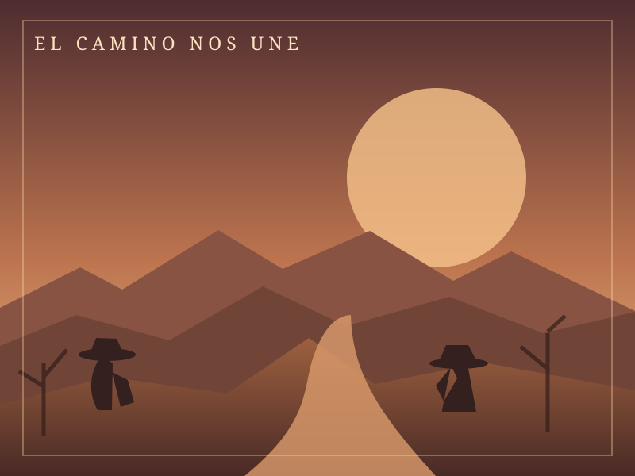
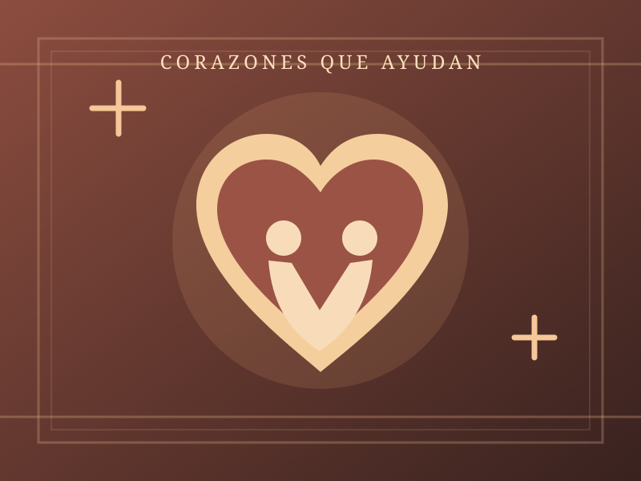
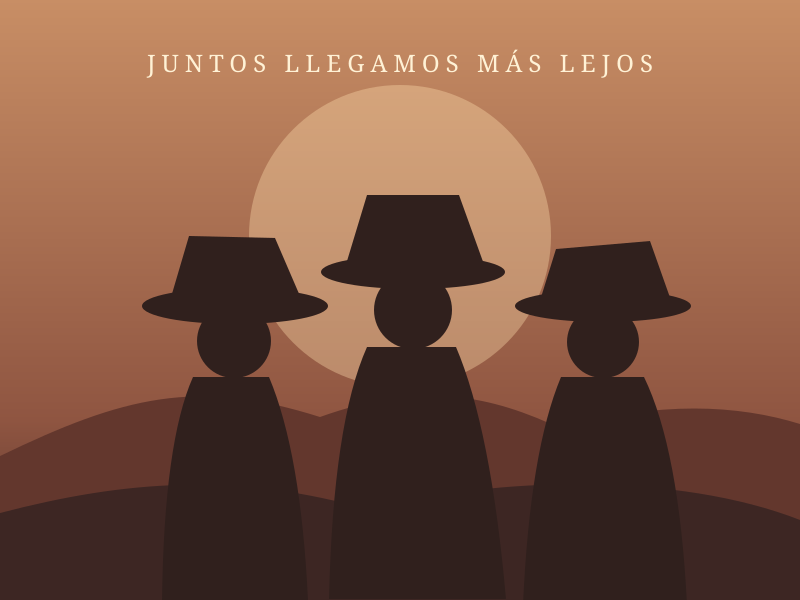

01 / 03♡
Llevar sonrisas
Reunir apoyos para entregar juguetes a niños y niñas en comunidades que necesitan un gesto de alegría.
HEARTS IN MOTION↗

Bienvenidos a VAQUERUN: donde las ganas de convivir se encuentran con el deseo de ayudar.
Una experiencia social con esencia vaquera, organizada para sumar esfuerzos y llevar alegría a niñas y niños que más lo necesitan.
Detrás de cada paso hay una historia. Detrás de este evento, hay una misión que vale la pena compartir.
Somos parte de una iniciativa altruista que organiza eventos para recaudar fondos y transformarlos en juguetes, ilusión y momentos especiales para niñas y niños que los necesitan.
Este año nuestra misión toma un nuevo camino: en lugar del tradicional desfile de Día de Reyes, queremos visitar poblados y comunidades con mayores necesidades para entregar los juguetes directamente.
Con VAQUERUN también buscamos inspirar a más personas a conocer, compartir y apoyar esta causa a través de las redes sociales.
DESCUBRE NUESTRA MISIÓN ↗Reunir apoyos para entregar juguetes a niños y niñas en comunidades que necesitan un gesto de alegría.
Cambiar el recorrido de un desfile por visitas directas a poblados y lugares con mayores necesidades.
Crear conciencia y compartir la misión para que más personas se sumen y la solidaridad llegue más lejos.
VAQUERUN no es una carrera de competencia: es una convivencia para correr, compartir y pasarla bien, con una razón que nos mueve.
Aquí no habrá primero, segundo o tercer lugar. No perseguimos un podio; celebramos el hecho de participar por una buena causa.
Pronto compartiremos fotografías oficiales y todos los detalles del kit para participantes.
Consulta cómo sumarte y mantente pendiente de los puntos de inscripción y del formulario oficial de VAQUERUN.
Descubre qué nos mueve y por qué cada participante forma parte de esta causa.
Encontrarás los lugares y horarios oficiales en este mismo apartado.
Cuando esté disponible, podrás abrir el formulario oficial desde aquí.
Los puntos de registro se anunciarán próximamente.
Escanea el código cuando esté disponible o entra directamente al formulario oficial.
Cada apoyo cuenta para llevar más alegría a niñas y niños. Si tienes un negocio, emprendimiento o simplemente quieres sumarte, nos encantará escucharte.
Escríbenos para conocer cómo colaborar.
Pronto encontrarás aquí fotografías oficiales del evento, del equipo y de los momentos que construyen esta historia.

VAQUERUN / 01Nuestra ruta
VAQUERUN / 02Nuestra causa
VAQUERUN / 03Nuestra comunidadⓘ Las imágenes de esta sección son ilustrativas; puedes sustituirlas por fotografías oficiales.
Síguenos, comparte la causa e invita a alguien más a formar parte de VAQUERUN.